")
Summoning - Skill Focuses
Introduction | Attack | Controlled | Defence | Magic | Ranged | Strength | Healers | Beasts of Burden | Foragers
Introduction
Familiars come with a wide array of advantages, so it's best to know which familiar you're looking for depending on what you need them for. The tables below list all of the familiars you can use for each type of specific skill focus.
Attack
| Familiar | Summoning Level Required | Time (Minutes) | Abilities |
 Spirit wolf |
1 |
6 | Fights (Level 26) Howl |
 Mosquito |
17 |
12 | Fights (Level 32) Pester |
| 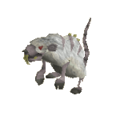 Albino rat |
23 |
22 | Fights (Level 37) Forager - stores cheese after scroll use Cheese Feast |
 Void shifter |
34 |
94 | Fights (Level 46) Teleporter - if you are in combat and have less than 10% of your life points, it will teleport you to the Void Knight Outpost Call to Arms |
| 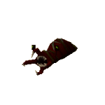 Bloated leech |
49 |
34 | Fights (Level 76) Blood Drain |
 Spirit kyatt |
57 |
49 | Fights (Level 93) Hunter boost (5) - invisible Pounce - if summoned or called directly into combat, its first attack can deal up to triple normal damage Can teleport you to the Piscatoris Hunter area Ambush |
 Spirit cobra |
63 |
56 | Fights (Level 105) Ophidian Incubation |
 Ravenous locust |
70 |
24 | Fights (Level 120) Can eat your opponent's food Remote view Famine |
 Praying mantis |
75 |
69 | Fights (Level 131) Mantis Strike |
| 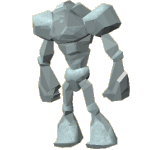 Ice titan |
79 |
64 | Fights (Level 139) Titan's Constitution |
| 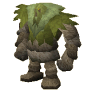 Swamp titan |
85 |
56 | Fights (Level 152) Swamp Plague |
Controlled
| Familiar | Summoning Level Required | Time (Minutes) | Abilities |
 Spirit scorpion |
19 |
17 | Fights (Level 51) Venom Shot |
 Vampire bat |
31 |
33 | Fights (Level 44) Can heal itself slightly when it damages an enemy Light enhancer Vampire Touch |
 Spirit larupia |
57 |
49 | Fights (Level 93) Hunter boost (5) - invisible Can teleport you to the Feldip Hunter area Rending |
 Stranger plant |
64 |
49 | Fights (Level 107) Farming boost (1 + 4% of your level) Forager - strange fruit Poisonous Blast |
 Arctic bear |
71 |
28 | Fights (Level 122) Counts as two pieces of arctic camouflage Hunter boost (7) - invisible Can teleport you to the Trollweiss and Rellekka Hunter area Arctic Blast |
 Giant ent |
78 |
49 | Fights (Level 137) Increased yield when harvesting Farming fruit trees, belladonna and cacti Forager - produces oak logs Nature link - can convert pure essence into nature or earth runes Acorn Missile |
| 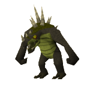 Spirit dagannoth |
83 |
57 | Fights (Level 148) Ferocious - chance of attacking again without delay Spike Shot |
Defence
| Familiar | Summoning Level Required | Time (Minutes) | Abilities |
 Bronze minotaur |
36 |
30 | Fights (Level 50) Bronze Bull Rush |
| 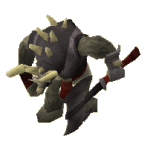 Iron minotaur |
46 |
37 | Fights (Level 70) Iron Bull Rush |
 Steel minotaur |
56 |
46 | Fights (Level 90) Steel Bull Rush |
 Mithril minotaur |
66 |
55 | Fights (Level 112) Mithril Bull Rush |
 Adamant minotaur |
76 |
66 | Fights (Level 133) Adamant Bull Rush |
 Rune minotaur |
86 |
151 | Fights (Level 154) Rune Bull Rush |
 Iron titan |
95 |
60 | Fights (Level 220) Defence boost (10% bonus to your stab, slash and crush Defence) - invisible Iron Within |
Magic
| Familiar | Summoning Level Required | Time (Minutes) | Abilities |
| 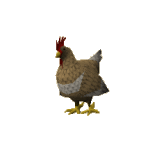 Dreadfowl |
4 |
4 | Fights (Level 26) Farming boost (1) Dreadfowl Strike |
 Spirit Tz-Kih |
22 |
18 | Fights (Level 36) Right-click Despair - when fighting other players, the Tz-Kih will drain your opponent's Prayer instead of inflicting damage Fireball Assault |
 Void torcher |
34 |
94 | Fights (Level 46) Right-click Strike - inflicts 10 extra damage with this attack Call to Arms |
 Spirit cockatrice (and variants) |
43 |
36 | Fights (Level 64) Right-click Drain - inflicts damage and drains a combat stat (varies according to type) Forager - cockatrice eggs Petrifying Gaze |
 Smoke devil |
61 |
48 | Fights (Level 101) Right-click Flames - hits opponent with a fire spell Dust Cloud |
| 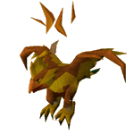 Phoenix |
72 |
30 | Fights (Level 124) Right-click Ash Blast - blinds opponents for a few seconds, reducing their chance to hit Rise from the Ashes |
 Fire titan |
79 |
62 | Fights (Level 139) Titan's Constitution |
 Wolpertinger |
92 |
62 | Fights (Level 210) Hunter boost (5) - invisible Grants you a 5% Defence bonus against Magic Double experience and yield when harvesting berries Magic Focus |
Ranged
| Familiar | Summoning Level Required | Time (Minutes) | Abilities |
 Thorny snail |
13 |
16 | Fights (Level 26) Beast of burden (3) Slime Spray |
| 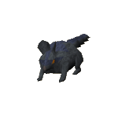 Giant chinchompa |
29 |
31 | Fights (Level 42) Explode - chance of exploding in combat, damaging nearby targets Explode |
 Evil turnip |
42 |
30 | Fights (Level 62) Forager - evil turnip slices Can heal itself slightly when using Ranged attacks Evil Flames |
 Karamthulhu overlord |
58 |
44 | Fights (Level 95) Right-click Drown - hits opponent with a water spell Doomsphere Device |
 Forge regent |
76 |
45 | Fights (Level 133) Counts as a tinderbox, with 10xp bonus Right-click Fireball - flaming attack that hits up to 6 enemies for up to 50 damage each Inferno |
 Hydra |
80 |
49 | Fights (Level 141) Regrowth |
 Geyser titan |
89 |
69 | Fights (Level 200) Ranged Boost (1 + 3% of your level) Use bowls on the geyser titan to get bowls of hot water Use amulets of glory on the geyser titan to recharge them Boil |
 Steel titan |
99 |
64 | Fights (Level 230) Defence boost (15% bonus to your stab, slash and crush Defence) - invisible Steel of Legends |
Strength
| Familiar | Summoning Level Required | Time (Minutes) | Abilities |
| 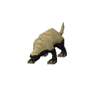 Honey badger |
32 |
25 | Fights (Level 45) Ferocious - chance of attacking again without delay Insane Ferocity |
Pyrelord |
46 |
32 | Fights (Level 70) Firemaking boost (3) - invisible Counts as a tinderbox, with 10xp bonus Immense Heat |
 Spirit jelly |
55 |
43 | Fights (Level 88) Dissolve |
 Spirit graahk |
57 |
49 | Fights (Level 93) Hunter boost (5) - invisible Trample - if the graahk has to move to get into combat, it will strike twice Can teleport you to the horned graahk area Goad |
 Barker toad |
66 |
8 | Fights (Level 112) Right-click Cannon - must be 'loaded' with a cannonball Toad Bark |
 Obsidian golem |
73 |
55 | Fights (Level 126) Mining boost (7) - invisible Volcanic Strength |
 Talon beast |
77 |
49 | Fights (Level 135) Deadly Claw |
 Moss titan |
79 |
58 | Fights (Level 139) Titan's Constitution |
| 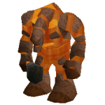 Lava titan |
83 |
61 | Fights (Level 148) Chance of inflicting 50 extra damage with every attack Firemaking boost (10) - invisible Mining boost (10) - invisible Can teleport you to the Lava Maze Ebon Thunder |
Healers
| Familiar | Summoning Level Required | Time (Minutes) | Abilities |
 Void spinner |
34 |
27 | 10 life points healed every 15 seconds Fights in self-defence (Level 40 - Defence) Call to Arms |
 Bunyip |
68 |
44 | 20 life points healed every 15 seconds Fights in self-defence (Level 70 - Attack) Use raw fish on the bunyip to turn them into water runes Swallow Whole |
| 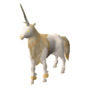 Unicorn stallion |
88 |
54 | Use scrolls to heal Fights in self-defence (Level 70 - Controlled) Right-click Cure - cures poison and disease Healing Aura |
Beasts of Burden
| Familiar | Summoning Level Required | Time (Minutes) | Abilities |
Thorny snail |
13 |
16 | 3 inventory slots Fights (Level 26 - Ranged) Slime Spray |
 Spirit kalphite |
25 |
22 | 6 inventory slots Fights (Level 39 - Defence) Sandstorm |
 Bull ant |
40 |
30 | 9 inventory slots Fights (Level 58 - Controlled) Unburden |
 Spirit terrorbird |
52 |
36 | 12 inventory slots Fights (Level 62 - Controlled) Tireless Run |
| 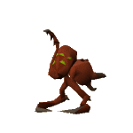 Abyssal parasite |
54 |
30 | 7 inventory slots for rune/pure essence Fights (Level 86 - Magic) Slowed abyssal Prayer drain Abyssal Drain |
 Abyssal lurker |
62 |
41 | 7 inventory slots for rune/pure essence Fights (Level 93 - Controlled) Abyssal Stealth |
| 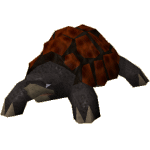 War tortoise |
67 |
43 | 18 inventory slots Fights (Level 86 - Defence) Testudo |
| 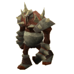 Abyssal titan |
93 |
32 | 7 inventory slots for rune/pure essence Fights (Level 215 - Attack) Essence Shipment |
 Pack yak |
96 |
58 | 30 inventory slots Fights in self-defence (Level 175 - Strength) Winter Storage |
Foragers
| Familiar | Summoning Level Required | Time (Minutes) | Abilities |
 Spirit spider |
10 |
15 | Forages for red spiders' eggs Fights (Level 25 - Controlled) Egg Spawn |
| 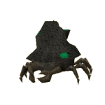 Granite crab |
16 |
18 | Forages for fish while summoner is Fishing Fights (Level 26 - Defence) Fishing boost (1) - invisible Stony Shell |
 Desert wyrm |
18 |
19 | Right-click to gather ores Fights (Level 31 - Strength) Mining boost (1) - invisible Electric Lash |
| 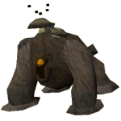 Compost mound |
28 |
24 | Forages for compost and seeds Fights (Level 37 - Strength) Farming boost (1 + 2% of your level) Use a bucket on your compost mound to get compost - deals 20 damage to your familiar Generate Compost |
 Beaver |
33 |
27 | Forages for logs and planks Woodcutting boost (2) - invisible Fletcher - counts as a knife for Fletching purposes Multichop |
 Void ravager |
34 |
27 | Forages for ores Fights (Level 46 - Strength) Mining boost (1) Mining boost (1) - invisible Call to Arms |
 Macaw |
41 |
31 | Forages for herbs Remote view Improved herb drops Herbcall |
 Magpie |
47 |
34 | Forages for jewellery Thieving Fingers |
 Ibis |
56 |
38 | Forages for fish while summoner is Fishing Fishing boost (3) - invisible Fish Rain |
| 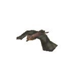 Fruit bat |
69 |
45 | Forages for fruit and seeds Light enhancer Fly - gathers fruit in Karamja Fruitfall |
 Granite lobster |
74 |
47 | Forages for fish while summoner is Fishing Fights (Level 129 - Defence) Fishing boost (4) - invisible Crushing Claw |

More articles in
Summoning (Members Only)
|
|
|
Further Help
If this article does not help you, you may find the following sections of the RuneScape site helpful:
|
|